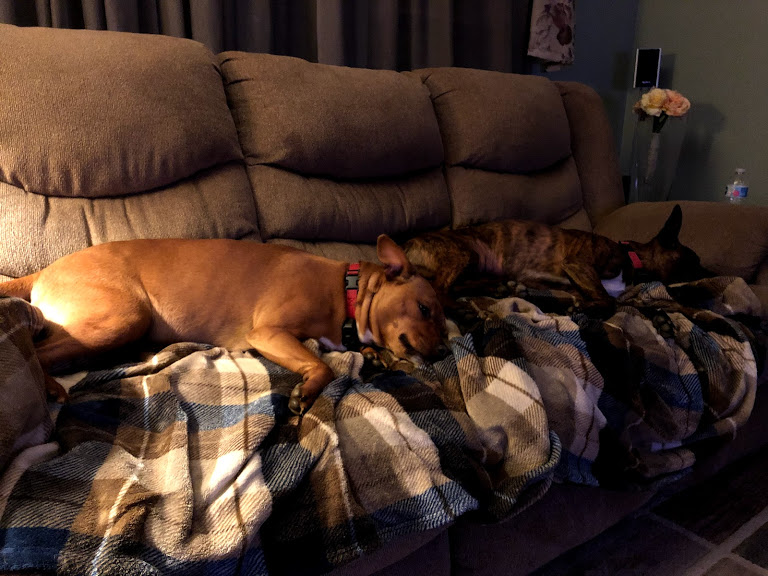
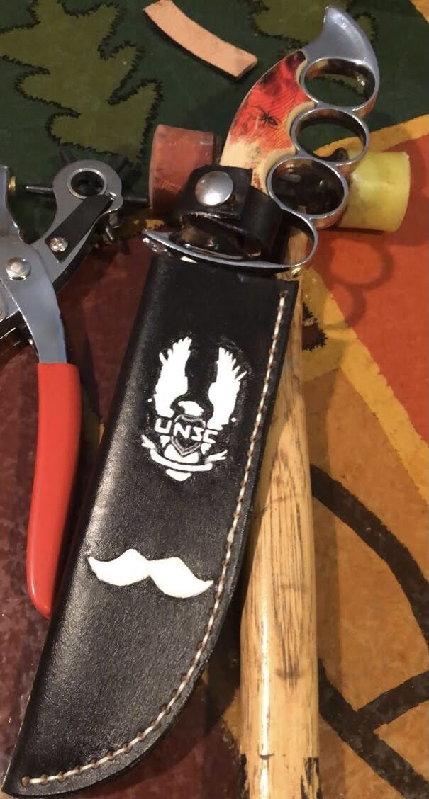
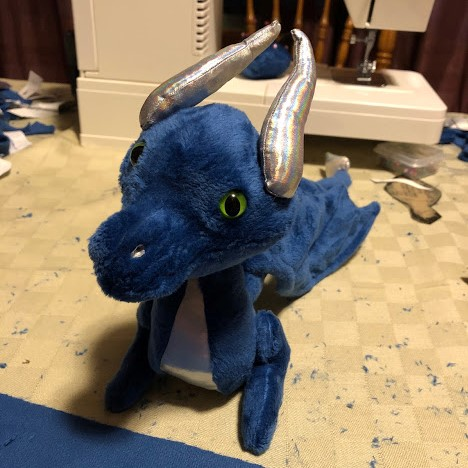

Hi, I'm Hannah! I'm originally from Joliet, IL. I graduated from Joliet Central High School, which is sometimes referred to as "the castle" in Downtown Joliet. I enjoy drawing, leatherworking, and going to the range. I used to shoot pellet rifles competitively in high school, and I still enjoy going to the range for fun target practice. I'm actually a self-taught leatherworker. It was quite the endeavor! I am an applied physics major, and I hope to become a scientific or research officer in the Air Force.
My family consists of me, my mom, my dad, my sister, and my two dogs. My mom is an administrative and operations assistant at BMO Harris Bank. My dad works as a lanscape estimator. My sister is nine and a half years older than me and lives in Iowa. I also have three nephews: Connor, Lennox, and Remmington. My two dogs are Ollie and Buster. They are littermates and have only been apart for a week in their lives. They are dachshund/pitbull terrier mixes.
My favorite hobby is leatherworking. As mentioned before, I am self-taught. I've been doing leatherworking since early high school. It was just one of those hobbies that I came across and thought was cool, so I decided to try it. I ended up loving it. I've made wallets, belts, keychains, and knife sheaths. My most recent project was actually making a knife sheath for a friend of mine. I'm not currently doing any leatherworking due to my school schedule, but I am planning on making a wallet for myself in the future.
I play Dungeons & Dragons. I'm usually the dungeon master. Below is my dicebag that I made, Fafnir.
